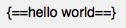
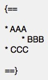
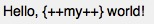
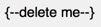
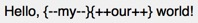
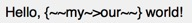
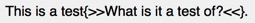

Highlight background
黄色¶
2个模块均提供了相似的效果
模块1: pymdownx.mark
==hello world==
效果
hello world
模块2: pymdownx.critic

效果
hello world
但这2个模块也有区别:
区别1:
- pymdownx.mark渲染出的html是
<p><mark>hello world</mark></p> - pymdownx.critic渲染出的html是
<p><mark class="critic">hello world</mark></p>
区别2:
- pymdownx.mark不支持块背景高亮
-
pymdownx.critic支持块背景高亮
用法:

效果:
- AAA
- BBB
- CCC
支持嵌套，详见黄色区块嵌套高亮代码示例
- AAA
绿色(下划线)¶
表示插入文字
依赖模块: pymdownx.critic

效果
Hello, my world!
支持嵌套，详见绿色区块嵌套高亮代码示例
红色(横线)¶
表示删除文字
依赖模块: pymdownx.tidle

效果
delete me
支持嵌套，详见红色区块嵌套高亮代码示例
绿色+红色(下划线+横线)¶
表示替换文字
2种实现方式:
-
先使用红色(横线)，再使用绿色(下划线)

-
使用专门的语法，依赖模块pymdownx.tidle

这2种方式效果完全一致，包括实际看到的样式和html都是相同的
Hello, myour world!
支持嵌套，详见绿色+红色区块嵌套高亮代码示例
灰色¶
表示注解
依赖模块: pymdownx.critic

效果
This is a testWhat is it a test of?.
注意:
- 只支持单行用法，不支持区块用法
- 无法与代码高亮结合，包括行内代码高亮和区块代码高亮